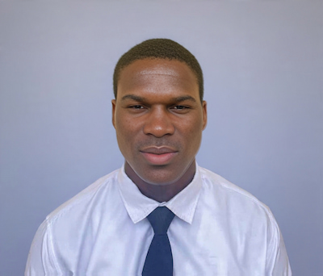

Roland Ezennaya Udensi | WDD 130

Hello! My name is Roland Ezennaya Udensi and I am from Nigeria. I live with my family and I enjoy playing the piano. I am a devout member of The Church of Jesus Christ of Latter-day Saints and I am preparing to serve a full-time mission.I am currently studying Web development and design at BYU-Idaho, and I am looking forward to building skills to create websites that help people.